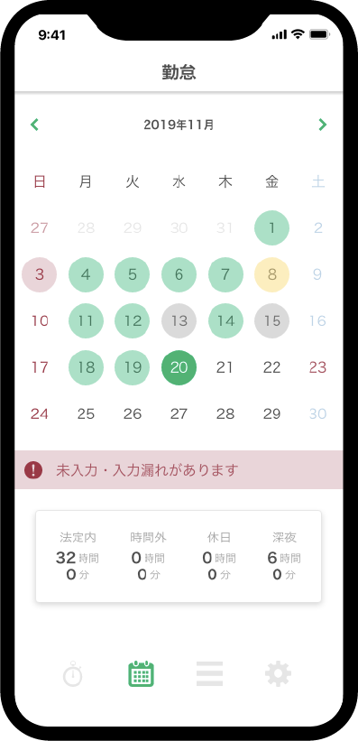

freee株式会社1dayUIインターン
freeeのUI・UXデザインインターンシップで制作しました。
「人事労務フリー」の問題点・改善点を洗い出し，UI設計，
プロトタイプ制作，ユーザーテストをグループワークで
行いました。
「出勤」「休憩」「退勤」の打刻を1ページに収め，1日の履歴を表示されるようにしました。
カレンダーのページから過去の情報を確認することができます。
アラートを表示し，入力漏れをわかりやすく改善しました。
編集画面も入力しやすくデザインしました。
